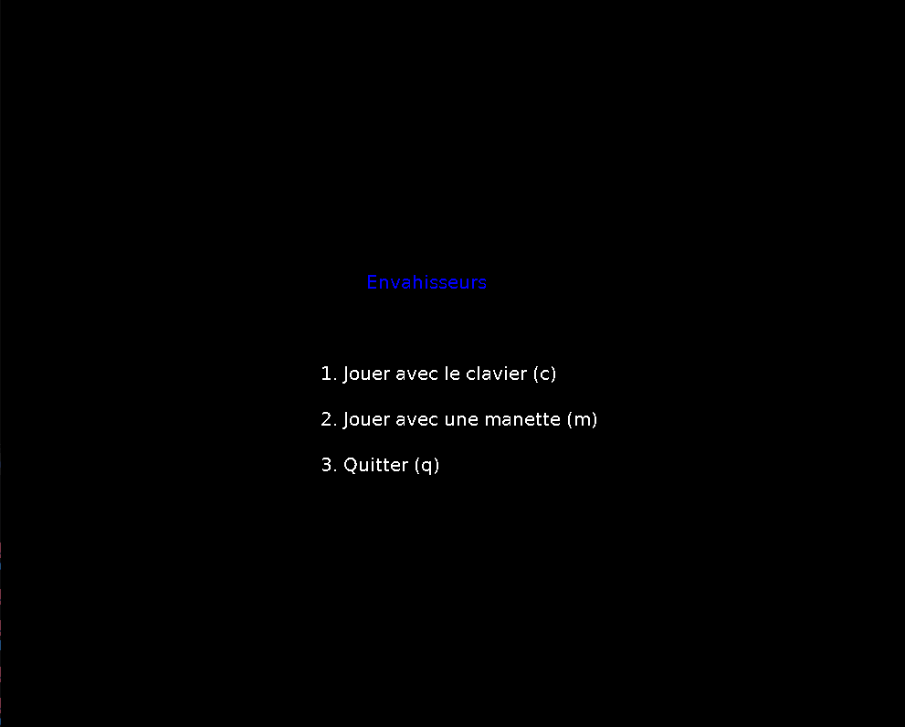
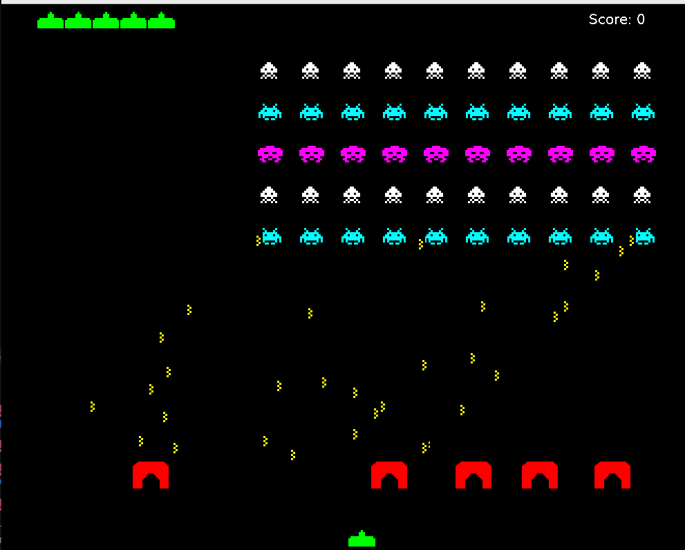
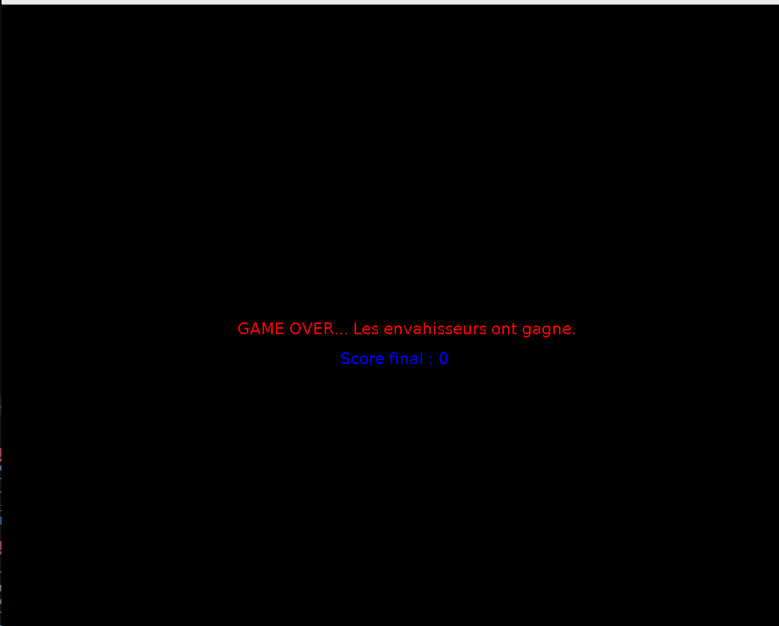

Un projet complet associant le développement d'un jeu d'arcade rétro en C et la création du firmware de sa manette USB dédiée (LUFA).
Ce projet visait à lier la programmation logicielle et matérielle en recréant non seulement la logique logicielle d'un jeu d'arcade classique, mais également le contrôleur de jeu physique permettant d'y jouer.
Le jeu est parfaitement jouable grâce à la manette matérielle conçue. Ce projet hybride m'a permis de maîtriser l'architecture d'une boucle de jeu en C tout en approfondissant le standard USB HID côté embarqué.


